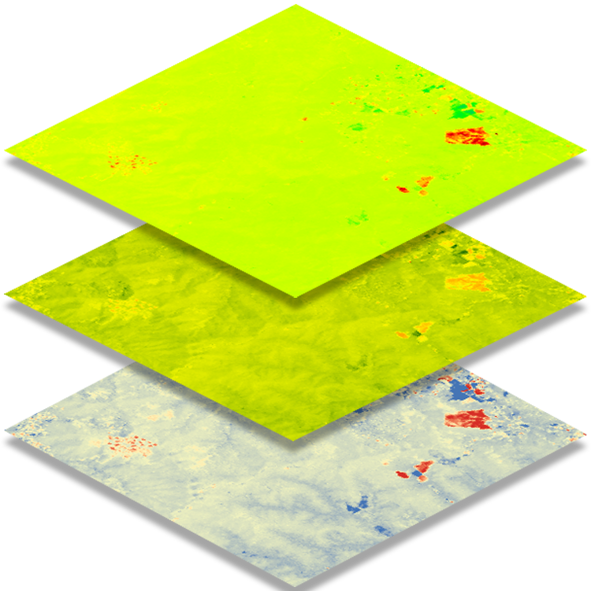

Southern Forest Area Change Tools - SouthFACT
Southern Forest Area Change Tools
SouthFACT
Tools to identify and quantify changes in southern forests.

Shortwave Infrared Band Differencing (SWIR)
Identify drastic vegetation changes, particularly forest harvesting.
Normalized Difference Vegetation Index (NDVI)
Assess the change in vegetation health and productivity.
Normalized Difference Moisture Index (NDMI)
Detect subtle changes in vegetation moisture conditions.
View recent and historical changes on a map
Create forest change products for a specific area and time
Learn more about the tools and this site